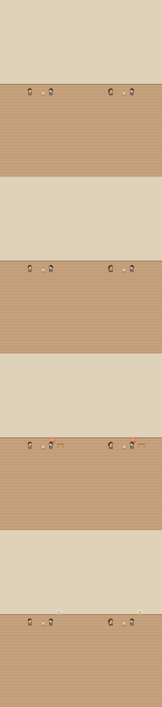
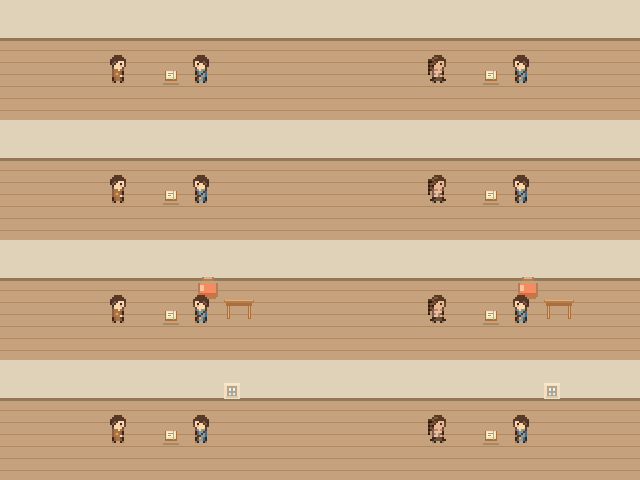
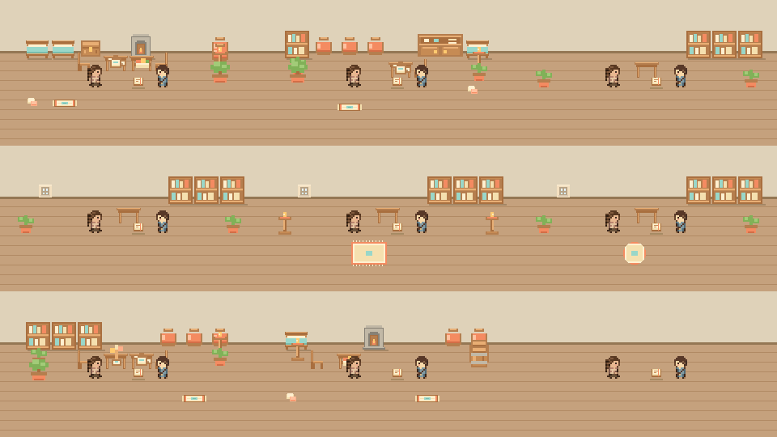
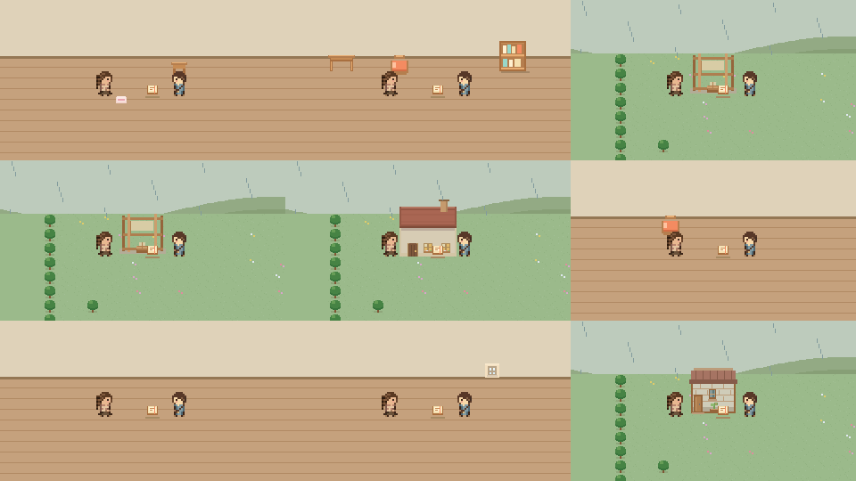
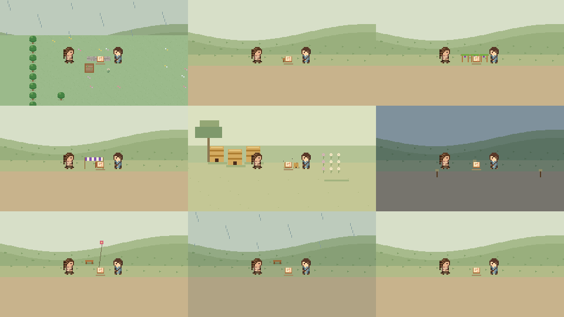
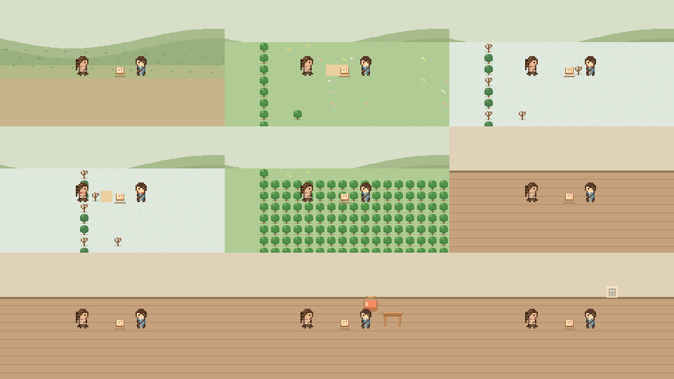
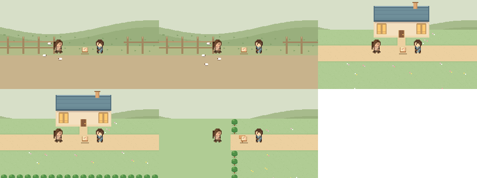

실제 장소 문맥 검토
집 벽 기본/실제 외형 · 휴대폰과 썸네일 검토


같은 대화를 실제 방·가구·새 터 건물 상태에 대입한 검토용 예시입니다. 게임 저장이나 완료 등록을 변경하지 않습니다.
118개 전체 모음
- child
- beekeeper
- acts
- letters
- hebJud
- rev
- apothecary
- fisher
- 집 가구를 모두 치운 상태

- 실제 옮긴 책상과 장미색 방석
- 새 터 서고 실제 가구
- 새 터 건물 ordered
- 새 터 건물 building
- 새 터 건물 done
- 새 터 주택 저장된 가구
- 집에 세운 벽과 허문 벽
- 배우자 방 창 · 치운 가구 유지
- 자녀의 실제 약초 연구 일터

- 실제 놓은 연결 돌길 · 정원 · 덤불
- 원래 빵집 벤치 해금
- 원래 포도 시렁 해금
- 베틀 차양 · 원래 마을2단계
- 늘어난 벌통 · 원래 마을4단계
- 실제 밤 등불
- 맑은 낮 언덕 연
- 빗속 언덕 연 없음
- 실제 기름틀 손잡이 해금

- 실제 대장간 지붕 해금
- 원본 흙길과 이어지는 잔디
- 겨울 원본 잎 진 생울타리
- 겨울 새 터 가장자리 늘푸른나무
- 땅 해금 전 배치한 그림 숨김
- 실제 칸막이 문맥 · 지도 테두리는 바닥에 중복 표시하지 않음
- 허문 방 사이 벽 · 바닥 연결
- 생활방의 뒤쪽 벽면과 실제 옮긴 가구
- 창문 앞에 가까이 서도 창은 바닥 뒤쪽 벽면에 유지

- 실제 양 우리 · 원래 세 마리
- 실제 양 우리 · 해금 뒤 다섯 마리
- 원본 일곱 칸 새 터 서고 외관
- 해금 전에도 서 있는 원본 새 터 서고
- 원본 새 터 왕래 표식
